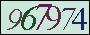

跳至內容區
:::
網站導覽
國資圖一證通
苗栗縣政府
苗栗縣教育入口網
書香苗栗閱讀網
全站檢索
查詢區開關
館藏查詢
... ...
字型大小：
小
中
大
本館介紹
本館政策
關於本館
聯絡通訊
交通資訊
開放時間
館區平面圖及導覽
網站資料開放宣告
活動訊息
最新活動
公告
新聞稿
轉知訊息
活動行事曆
館員行事曆
線上申辦
館藏查詢
苗栗文學電子書
期刊訂閱一覽表
報紙訂閱一覽表
數位資源
便民服務
常見問題
借閱說明
通閱說明
圖書推薦
使用規定
班訪業務
一證通
分區資源中心
簡介
公共圖書館區域資源中心
公共圖書館圖書資源共享服務平台
分區資源中心成果
線上服務
書香苗栗
夢花文學獎
簡章
歷年成果
苗栗文學集
簡章
歷年成果
獎勵閱讀計畫
閱讀起步走
輔導鄉鎮
聽故事活動
閱讀推廣與館藏充實
閱讀環境與設備升級
公共圖書館分齡分眾服務網
國民中小學閱讀
文狀元
閱讀磐石獎
閱讀空間改善
學校閱讀推廣
充實學校館藏
志工專區
志工專區
公告資訊
讀者登入
證號
密碼
驗證碼

文字驗證碼
記住帳號
忘記密碼
行動版側欄開關
:::
首頁
節點一
節點一之一
問卷調查結果
列印
轉寄
分享
回上一頁
基本資料
性別
男
女
數量
100
200
年齡
12歲以下
13-19歲
20-29歲
30-39歲
40-49歲
50-59歲
60歲以上
數量
20
30
30
40
50
30
20
圖書館服務使用情形
7.請問通常您到圖書館的目的是（可複選）：
top